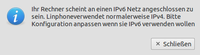

linphone
Dieser Artikel wurde für die folgenden Ubuntu-Versionen getestet:
Ubuntu 16.04 Xenial Xerus
Ubuntu 14.04 Trusty Tahr
Zum Verständnis dieses Artikels sind folgende Seiten hilfreich:
Verwenden eines PPAs, optional
Programme automatisch starten, optional
Linphone 
 ist ein SIP-basiertes, videofähiges Internet-Telefon mit einer GTK+-Oberfläche, das die Soundarchitektur ALSA nutzt. Linphone kann mit allen gängigen VoIP-Dienstleistern (z.B. Sipgate, Nikotel, Antisip oder Ekiga.Net) und an jedem Asterisk-Server betrieben werden.
ist ein SIP-basiertes, videofähiges Internet-Telefon mit einer GTK+-Oberfläche, das die Soundarchitektur ALSA nutzt. Linphone kann mit allen gängigen VoIP-Dienstleistern (z.B. Sipgate, Nikotel, Antisip oder Ekiga.Net) und an jedem Asterisk-Server betrieben werden.
Gegenstellen, mit denen Gespräche geführt werden können:
Linphone selbst - auch für Windows, Mac OS X, IOS, Android und Blackberry verfügbar
Jitsi (früher SIP-Communicator)
Qutecom (früher Wengophone bzw. Openwengo)
kommerziell:
Windows Messenger (nicht MSN)
Ein Festnetz-Telefon. Dafür benötigt der Linphone-User einen Account bei einem SIP-Provider, der ein Gateway zwischen SIP und Festnetz unterhält.
Linphone gibt es auch für Windows. Die portable Version braucht nicht installiert zu werden und schreibt nichts in die Registry. Sie eignet sich damit gut, um eine Archivdatei mit allen Zugängen, Konfiguration und Zielnummern zu erstellen, die z.B. via USB-Stick transportiert oder per E-Mail geschickt und für Anrufe z.B. aus einem Internetcafé ans heimische Linphone benutzt werden kann. Außerdem besitzt es Unterstützung für das IPv6-Protokoll.

Installation¶
Linphone kann direkt aus den offiziellen Paketverwaltung installiert [1] werden:
linphone (universe)
 mit apturl
mit apturl
Paketliste zum Kopieren:
sudo apt-get install linphone
sudo aptitude install linphone
Danach wird es bei Ubuntu-Varianten mit einem Anwendungsmenü über den Eintrag "Internet -> linphone" gestartet.
PPA¶
Die aktuelle Version ist über das "Personal Package Archiv" (PPA) [3] der Entwickler erhältlich.
Adresszeile zum Hinzufügen des PPAs:
ppa:linphone/release
Hinweis!
Zusätzliche Fremdquellen können das System gefährden.
Ein PPA unterstützt nicht zwangsläufig alle Ubuntu-Versionen. Weitere Informationen sind der  PPA-Beschreibung des Eigentümers/Teams linphone zu entnehmen.
PPA-Beschreibung des Eigentümers/Teams linphone zu entnehmen.
Damit Pakete aus dem PPA genutzt werden können, müssen die Paketquellen neu eingelesen werden.
Nach dem Aktualisieren der Paketquellen erfolgt die Installation wie oben angegeben.

Einstellungen¶
Die Einstellungen sind unter "Verbindung -> Einstellungen" zu finden. Gespeichert werden diese in der Datei ~/.linphonerc im Homeverzeichnis.

Netzwerk¶
"NAT Traversal options":
"no firewall" - bei Anschluss direkt ans Internet
"use STUN server..." - falls ein Router zwischen den Rechner und das Internet geschaltet ist. Hier den STUN Server des SIP-Providers oder z.B.
stun.voxgratia.orgeintragen."specify firewall address manually" - falls man einen Router nutzt und aus irgendeinem Grunde STUN nicht benutzen will, kann man hier die äußere IP Adresse (falls fest) bzw. eine dynamische Domain wie
hallo.dyndns.orgeintragen.
Ganz so glücklich ist die Bezeichnung Firewall nicht. Hier geht es um die Weiterleitung der ankommenden VoIP-Pakete (Bild und Ton) im internen Netzwerk. Hat man hier nichts eingetragen, so zeigt sich ggf. die gefürchtete "einseitige Verbindung". D.h. der Gesprächspartner kann einen hören, man selbst ihn aber nicht.
Einige Vermittlungsstellen wie z.B. Asterisk können einem SIP-Agenten helfen, durch das NAT zu kommen. Darum kann es sein, dass eine Verbindung aus einem Netz mit NAT (Network Address Translation) funktioniert, obwohl hier nichts eingetragen ist.
Falls eine Firewall benutzt wird, müssen noch folgende Ports freigeschaltet werden (siehe auch Portweiterleitung):
5060 (
UDP) für den ankommenden Ruf7078 (
UDP) für Ton (ankommend und abgehend)9078 (
UDP) für Video
Siehe dazu auch die Sipgate FAQ  .
.
Port-Einstellungen am All-IP-Anschluss¶
An der Fritzbox 7412 und an ähnlichen Routern ist der Port 5060 für den integrierten VOIP-Client der Fritzbox reserviert. Dieser Port wird aber von Linphone standardmäßig verwendet, was dazu führt, dass man auf Linphone nicht angerufen werden kann. Man kann Abhilfe schaffen, wenn man in Linphone den Port für SIP (TCP + UDP) z.B. auf 5061 setzt. Außerdem kann für diesen Port Port-Forwarding im Router eingerichtet werden, was in nachfolgenden Bildern erläutert wird. Hierbei wurden in Linphone die Zugangsdaten des VOIP-Providers eingetragen.
.
SIP-Konto¶
Das Programm benötigt eine SIP-Kennung. Informationen zu weiteren SIP-Anbieter findet man im Artikel zu Ekiga. Die Daten sollten übertragbar sein.
T-Online¶
"Ihre Sip Adresse:" Die Telefonnummer mit Vorwahl (mit 0, nicht mit +49) und Durchwahl (ohne Sonderzeichen, alles zusammengeschrieben). Beispiel:
0221123456@t-online.deBei "Dienste auf entferntem Server" einen neuen "Proxy/Registrator" hinzufügen
"SIP-Identität":
sip:0221123456@tel.t-online.de"Proxy":
sip:tel.t-online.de
Die Route bleibt leer und "Register at startup" wird markiert
Diese Eingaben bestätigt man mit "OK" und bekommt dann eine Kennwortabfrage, in der man als Benutzernamen die eigene SIP-Adresse und das dazugehörige Kennwort eintragen kann. Das Feld Benutzer ID bleibt frei.
Sipgate¶
In Linphone unter "Einstellungen -> Netzwerkeinstellungen" kann STUN mit dem Server
stun.sipgate.netgenutzt werden.
Im Reiter "SIP-Accounts" unter "Proxyverbindungen" wird eine neue Verbindung hinzugefügt:
"SIP-Identität"
sip:XXXX@sipgate.de"SIP-Proxy-Adresse"
sip:sipgate.de"Transport"
UDP
Popup Username u. Passwort
"User-ID"
XXXX"Sip-Passwort"
YYYY
Seine SIP-ID XXXX und das SIP-Passwort YYYY findet man auf sipgate.de nach login unter "Meine Telefone" -> "Meine SIP-Zugangsdaten". Das SIP-Passwort ist nicht das Passwort, mit dem man sich auf der Webseite anmelden kann.
Zum Testen kann man den Echotest von Sipgate 10005 anrufen
1und1¶
Funktioniert ab linphone 3.9.1, z.B. aus dem PPA, [Stand Sept. 2016].
Unter "Einstellungen -> Netzwerkeinstellungen"
NAT, benutze STUN mit dem Server
stun.1und1.deMTU 1300, SIP/UDP+TCP 5060, Audio/RTP 7078 fixed, Video/RTP 9078 f. (Default)
Im Reiter "SIP-Accounts" unter "Proxyverbindungen" wird eine neue Verbindung hinzugefügt:
"SIP-Identität"
sip:49VorwahlOhneNullRufnummer@1und1.de"SIP-Proxy-Adresse"
sip:sip.1und1.de"Transport"
UDP
Popup Username u. Passwort
"User-ID"
49VorwahlOhneNullRufnummerDas SIP-Passwort muss im 1&1 Control Center gesetzt werden. Auf der Seite https://control-center.1und1.de wählt man im Reiter "Startseite" -> "Rufnummer verwalten" -> "Passwort" -> wählt die Nr aus und öffnet "Passwort bearbeiten".
Gibt es Probleme, kann die Verwendung anderer Ports Abhilfe beschaffen. Dazu im Router und in Linphone eine UDP-Portfreigabe einrichten.
Sound Devices¶
Welche Soundkarte zur Tonaufnahme und -wiedergabe benutzt wird? Interessant für:
Sprechen über den Kopfhörer, Klingeln über den Lautsprecher
Benutzung eines Bluetooth Headsets (btsco)
Benutzung des Mikrophons in der Webcam (sinnvoll bei Videokonferenzen um zu verhindern, dass die Lautsprecher ins Mikro einkoppeln und auf der anderen Seite Echo erzeugen)
Codecs¶
Hiermit wählt man die Übertragungsverfahren für Bild und Ton aus. Welcher Codec benutzt wird, handeln beide Endstellen und eventuell dazwischenliegende Vermittler (z.B. Asterisk) miteinander beim Gesprächsaufbau aus. Aber die hier angegebene Reihenfolge entscheidet mit. Wird kein gemeinsamer Codec gefunden, kommt kein Gespräch zustande. Also hier nicht zu viel deaktivieren.
Codecs für Tonübertragung¶
"PCMU/PCMA" - eigentlich G.711 ulaw/alaw: wenig Kompression, darum viel Bandbreite, aber guter Klang
GSM (klassische Mobiltelefone) - mäßiger Klang, spart aber Bandbreite
Speex - freier Codec und daher vorzuziehen. Jedoch können nicht alle SIP-Dienste (z.B. Sipgate) richtig damit umgehen. Klingt besser als GSM.
Codecs für Bildübertragung¶
H.263 - einziger standardisierter hier im Bunde. Mittel der Wahl, wenn z.B. mit X-lite Endpunkten Bildgespräche geführt werden sollen oder wenn Asterisk < 1.2 dazwischen hängt.
"MP4V-ES/MPEG.4" - entgegen landläufiger Meinung kein H.264 (es sollten sich trotzdem Endpunkte finden, die dieses Verfahren benutzen können)
Snow - Freier Codec. Neu in Linphone 2.0
Linphone unterstützt den Codec H.261 nicht. Der eigentlich veraltete Codec wird aber von Ekiga < 3.0 benötigt. Bildtelefonate zwischen Ekiga 2.0.x und Linphone funktionieren daher nicht.
Welcher ist der richtige Codec?¶
nur Tonübertragung: "PCMA/PCMU"
Bild und Ton über DSL 2000/Wimax:
Bild: "H.263"
Ton: "GSM" oder "Speex" (PCMU/PCMA (64 kbit/s) und H.263 (128 kbit/s) passen nicht zusammen durch eine DSL 2000 Leitung)
Hinweis:
H.263 heißt bei Asterisk
h263p.
Bandwith¶
"Upload" - die Upload Bandbreite des Internetanschlusses. Beispiel: DSL 1000 = 128 kbit/s.
"Download" - die Download-Bandbreite des Anschlusses. Beispiel: DSL 1000 = 1024 kbit/s.
Trägt man hier für die eigene Leitung zu große Werte ein, kommt es zu Aussetzern bei Bild und Ton auf der anderen Seite. Klagt die Gegenstelle z.B. über ein schlechtes, zerfaserndes Bild, kann man hier getrost einen kleineren Wert eintragen. Das Bild wird dann verschwommener und ruckeliger, zerbröselt aber nicht mehr. 128 kbit/s ist das Minimum bei H.263.
Benutzung¶
Nach dem Programmstart verankert sich Linphone als Symbol im Benachrichtigungsfeld und wird über dieses gesteuert bzw. beendet. Man sollte darauf achten, das Programm nicht versehentlich in mehreren Instanzen zu starten. Unter Unity führt das Panel-Symbol zu einem weiteren Problem, das sich aber durch einen kleinen Eingriff lösen lässt.
Wählen von Telefonnummern¶
Es gibt zwei Möglichkeiten:
Eingabe bei SIP-Adresse. Beispiel:
sip:VorwahlRufnummer@sipgate.denur die Telefonnummer. Das geht aber nur, wenn:
der SIP-Provider (z.B. Sipgate) unter "Einstellungen -> SIP" konfiguriert ist und
unter dem Nummernfeld in Proxy to use ausgewählt ist
aus dem Adressbuch
Gespräch annehmen oder abweisen/beenden¶
Wie beim Mobiltelefon: links annehmen, rechts auflegen.
Adressbuch¶
Hier können Kontakte abgelegt werden, mit denen man häufiger zu tun hat. Öffnen kann man es durch Klick auf den blauen Ordner rechts neben dem Nummern/Adressfeld. Von den Kontakten im Adressbuch kann man dann den Online Status sehen (wenn die Gegenseite das erlaubt und in deren Adressbüchern "show online status" ativiert ist).
Hinweis:
Adressbuch und ein Telekom-VoIP Anschluss: Trägt man in das Adressbuch Namen und Nummern ein, funktionieren diese nicht via Doppelklick in Linphone. Telekom erwartet als SIP-Namen immer die Telefonnummer und kann demnach mit einem Namen wie "Manfred Mustermann" <sip:01234512345@tel.t-online.de> nicht umgehen.
Workaround: Adresse im Telefonbuch anklicken und den Namen vor der SIP-Adresse entfernen.
Chatten¶
Nach Eingabe einer vollständigen SIP-Adresse in das Nummern/Adressfeld "or chat" anklicken und loslegen.
Weitere Einstellungen¶
show more...
Controls¶
Lautstärkeregler für Aufnahme, Wiedergabe und Klingel
Video ein/ausschalten (nicht im Gespräch)
Presence¶
Gesprächspartner sollen sehen, ob man selbst:
anwesend
gleich wieder zurück
abwesend
beschäftigt
gerade woanders
unter einer anderen Nummer erreichbar ist
DTMF¶
Sendet Wähltöne, um z.B. einen Anrufbeantworter abzufragen oder sich durch ein Hotline-Audiomenü zu klicken ("Drücken Sie 1 für Beschwerden").
My Online Friends¶
Passendes Gegenstück zu Presence. Welcher Gesprächspartner aus dem Adressbuch ist an-/abwesend, etc.
Autostart¶
Für einen Eintrag im Autostart [3] muss bei der Version aus den offiziellen Paketquellen von Ubuntu 12.04 der Befehl linphone-3 verwendet werden. Bei neueren Ubuntu-Versionen und der Version aus dem PPA lautet der Befehl linphone.
 Übersichtsartikel
Übersichtsartikel- Erstellt mit Inyoka
-
 2004 – 2017 ubuntuusers.de • Einige Rechte vorbehalten
2004 – 2017 ubuntuusers.de • Einige Rechte vorbehalten
Lizenz • Kontakt • Datenschutz • Impressum • Serverstatus -
Serverhousing gespendet von